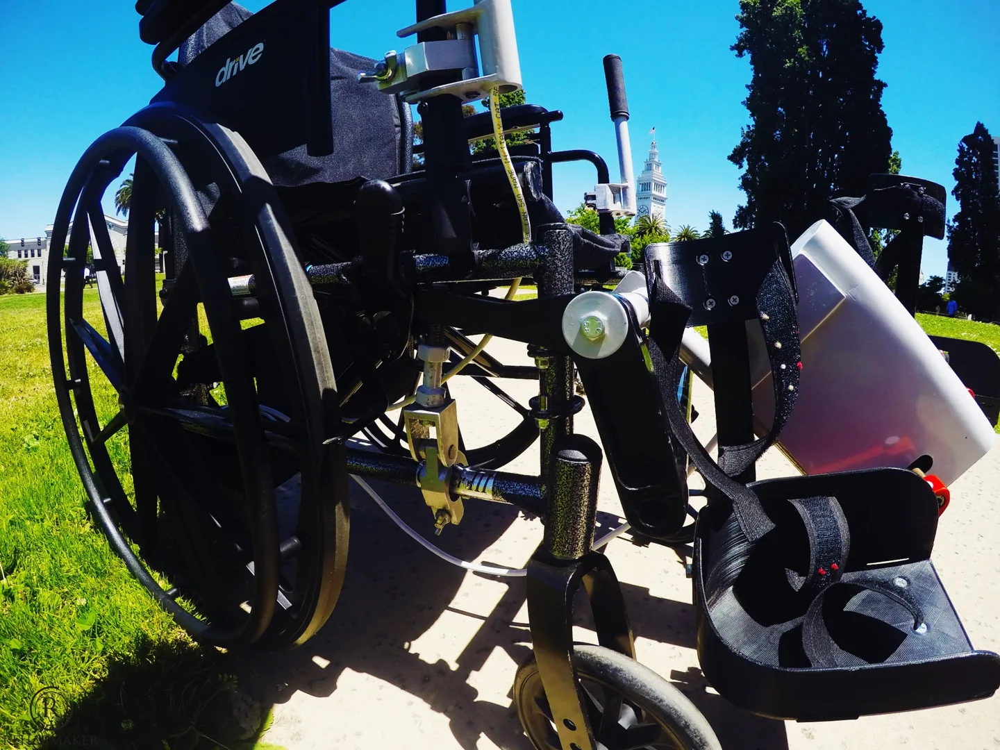
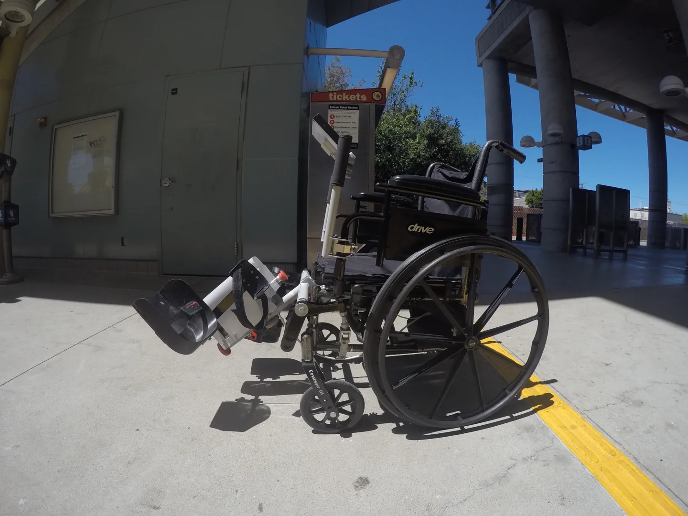
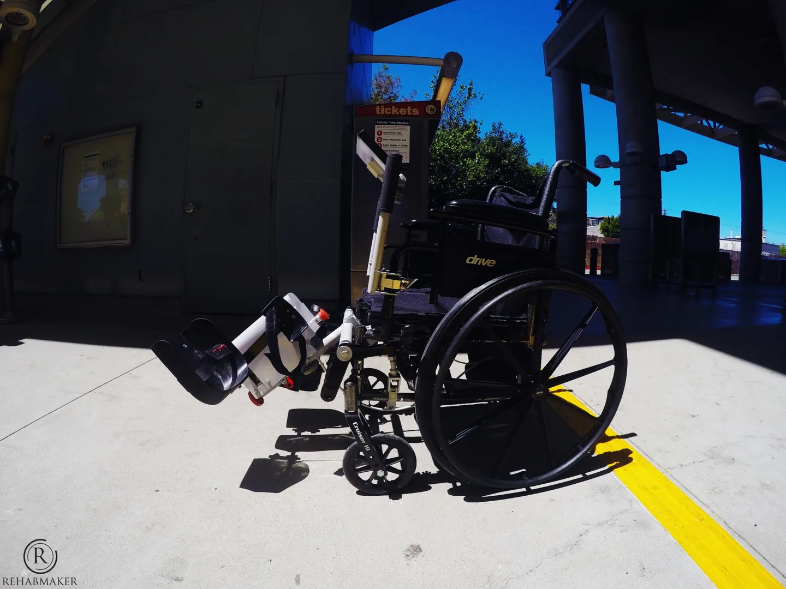
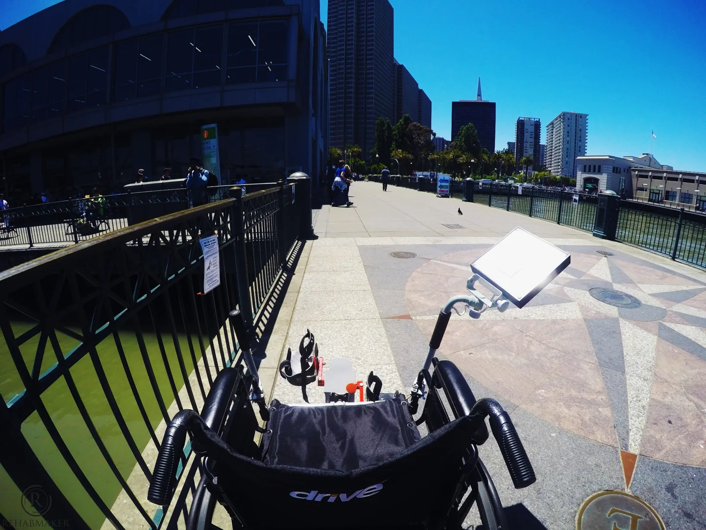
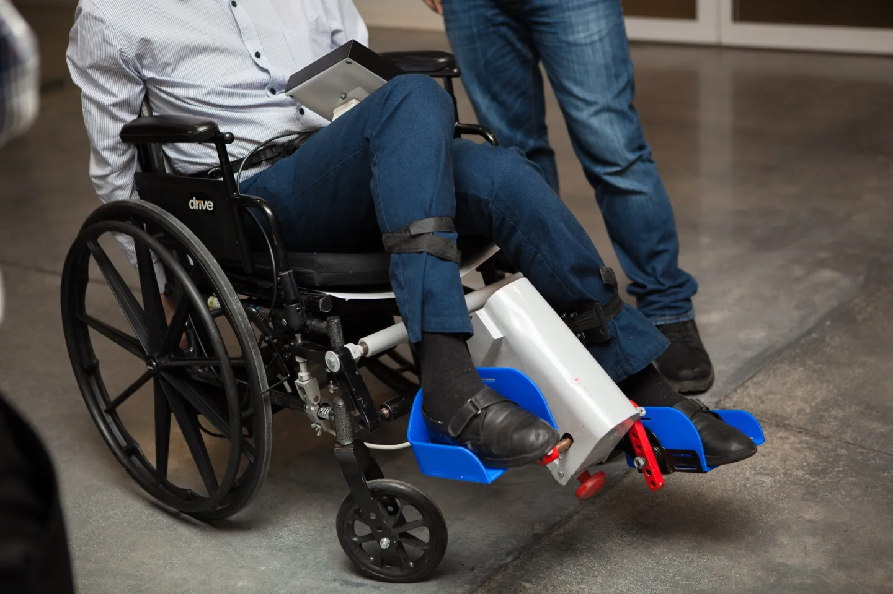
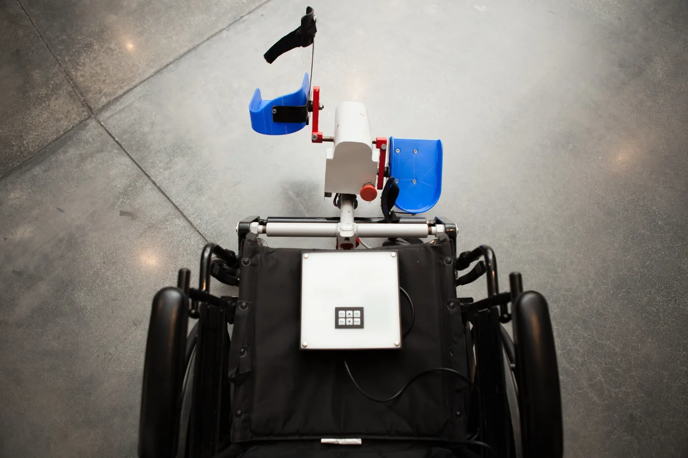

LegMaker Prototype Photos: Hardware & Controls | Rehabwheel https://rehabwheel.com/photos.html
PROTOTYPE DOCUMENTATION
LegMaker photo gallery. Six original photographs supplied by Rehabwheel, covering outdoor hardware, seated demonstration and controls, including two versions of the wheelchair side view. Select a photo to open the full image.
LegMaker product details and prototype configuration →

Attachment detail Outdoor prototype documentation. 
Wheelchair side view — original version Outdoor prototype documentation. 
Wheelchair side view Outdoor prototype documentation. 
Controls and pedals Outdoor prototype documentation. 
Seated prototype demonstration LegMaker pedal and wheelchair configuration. 
Controls overview Wheelchair-mounted panel and lower-limb pedals. Development hardware shown; product configuration may change.
CONTINUE EXPLORING
Your next step